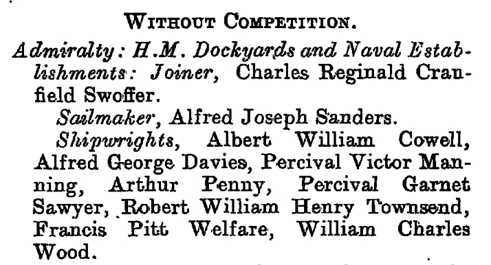
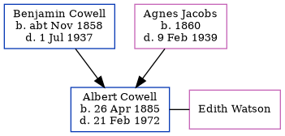

Albert William Cowell 1885 - 1972
[ Home ] | [ Calendar ] | [ Surnames Index ] | [ Errors ] | [ Family History ]A shipwright and the child of Benjamin Cowell (a woollen warehouse foreman) and Agnes Jacobs, Albert Cowell, the third cousin twice-removed on the mother's side of Nigel Horne, was born in Chatham, Kent, England on 26 Apr 18851,2,3 and baptised in Medway, Kent, England on 14 Jul 1885. He married Edith Watson there c. May 19125.
During his life, he was living at 5 Hope Street in Chatham on 5 Apr 18917 and on 31 Mar 19011; at 157 Glencoe Road in Chatham on 2 Apr 19116 - less than a mile from his father Benjamin William who was living at 157 Glencoe Road in Chatham and on 19 Jun 19218 (when he was living with his); and at 24 Gorrell Road, Whitstable, Kent, England in 1972. In 1921 he was working at Shipwright.
He died on 21 Feb 1972 in Bridge, Kent, England3,4.
Parents
- Benjamin William was born c. Nov 1858
- Agnes Sarah was born in 1860
Citations
- 1901 England, Wales & Scotland Census - Findmypast (was age 15 and the son of the head of the household)
- England & Wales births 1837-2006 - Findmypast
- England & Wales deaths 1837-2007 - Findmypast
- England & Wales Government Probate Death Index 1858-2019 - Findmypast
- England & Wales marriages 1837-2008 - Findmypast
- 1911 Census for England & Wales - Findmypast (was age 25 and the son of the head of the household)
- 1891 England, Wales & Scotland Census - Findmypast (was age 5 and the son of the head of the household)
- 1921 Census Of England & Wales - Findmypast (was age 36 and the son of the head of the household)
Media
Albert Cowell - probate
London Gazette 6 Apr 1915

1891 England, Wales & Scotland Census - GBC/1891/0005444124
England & Wales marriages 1837-2008 - BMD/M/1912/2/AZ/000208/107
England & Wales births 1837-2006 - BMD/B/1885/2/AZ/000126/296
England & Wales deaths 1837-2007 - BMD/D/1972/1/AZ/000281/110
England & Wales Government Probate Death Index 1858-2019 - GBOR/GOVPROBATE/C/1972-1972/00052019
Family Tree
Map
Generated by ged2site. Last updated on Jul 3, 2024
Known Issues
Residence record for 1972 contains no citation
Listed in the residence for 19 Jun 1921, but spouse Edith Watson is not
Listed in the residence for 1972, but spouse Edith Watson is not
Location for "employment" on 1921 is empty
1939 UK register information missing